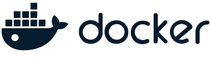

What is DevOps?
DevOps is a combination of Development (Dev) and Operations (Ops) practices, tools, and a cultural philosophy that aims to bridge the gap between software development and IT operations. It emphasizes collaboration, automation, continuous integration/continuous deployment (CI/CD), and continuous improvement to deliver high-quality software efficiently and reliably.
Key Principles of DevOps
- Collaboration : Foster teamwork between development, operations, and other stakeholders
- Automation : Automate repetitive tasks such as testing, deployment, and infrastructure management
- Continuous Integration and Delivery (CI/CD) : Ensure frequent and reliable code integration and deployment
- Monitoring and Feedback : Implement tools and processes to monitor system performance and gather user feedback
- Infrastructure as Code (IaC) : Use code to manage and provision infrastructure, making it reproducible and consistent.
Benefits of Devops
- Faster Delivery of Software
- Continuous Integration and Delivery (CI/CD) automates build, test, and deployment processes.
- Reduces time to market for new features and bug fixes.
- Shortens development cycles by improving team collaboration.
- Improved Collaboration and Communication
- Encourages teamwork between development, operations, and stakeholders.
- Promotes shared responsibility for common goals.
- Enables quick feedback loops for adjustments and improvements.
- Enhanced Quality and Reliability
- Automated testing ensures code quality with fewer production bugs.
- Monitoring and logging proactively identify and resolve issues.
- Standardized processes ensure consistency and reduce human errors.
- Greater Efficiency
- Automation replaces repetitive manual tasks with scripts and tools.
- Infrastructure as Code (IaC) streamlines infrastructure management.
- Enables efficient scaling of infrastructure and applications.
- Cost Optimization
- Reduced downtime minimizes service interruptions.
- Automation and IaC optimize resource allocation.
- Early bug detection lowers the cost of fixing production issues.
- Increased Security
- DevSecOps integrates security into every stage of the pipeline.
- Automated compliance enforces security policies and audits.
- Faster patch management quickly addresses vulnerabilities.
- Enhanced Customer Satisfaction
- Rapid updates deliver new features and fixes based on feedback.
- High availability ensures reliable services.
- User-centric development aligns priorities with customer needs.
- Continuous Improvement
- Data-driven decisions guide improvements and optimizations.
- Encourages innovation through faster experimentation cycles.
- Fosters a culture of learning and adaptability.
- Competitive Advantage
- Adaptability helps respond quickly to market changes and demands.
- Frees up time for teams to focus on creative problem-solving.
- Faster delivery and better quality enhance market leadership.
DevOps Life Cycle
- Plan: Defining the project's goals, timelines, and requirements.
- Develop: Writing and coding the application.
- Build: Compiling the code and preparing it for deployment.
- Test: Ensuring the code is functioning as expected and free from errors.
- Release: Deploying the code to the production environment.
- Deploy: Rolling out updates and monitoring their impact.
- Operate: Running and managing the application in production.
- Monitor: Continuous observation of the system's performance and health.
Stepwise Learning Map
-
Understand DevOps Fundamentals
- Learn the Basics:
- What is DevOps?
- DevOps principles: Collaboration, automation, continuous improvement.
- Key Concepts:
- CI/CD
- Infrastructure as Code (IaC)
- Monitoring
- Version Control
- Learn the Basics:
-
Version Control Systems (VCS)
- Tools: Git, GitHub/GitLab/Bitbucket
- Skills to Acquire:
- Setting up repositories
- Branching and merging
- Managing pull requests and conflicts
-
Build Automation
- Tools: Maven, Gradle, Ant
- Skills to Acquire:
- Automating code builds
- Managing dependencies
- Writing build scripts
-
Continuous Integration (CI)
- Tools: Jenkins, GitHub Actions, Travis CI, CircleCI
- Skills to Acquire:
- Setting up CI pipelines
- Running automated tests during CI
- Integrating code analysis tools (e.g., SonarQube)
-
Configuration Management and Infrastructure Automation
- Tools: Ansible, Puppet, Chef
- Skills to Acquire:
- Automating server setup
- Writing and managing playbooks (Ansible) or manifests (Puppet)
- Configuring services and applications
-
Containerization
- Tools: Docker, Podman
- Skills to Acquire:
- Creating and managing containerized applications
- Writing Dockerfiles
- Working with container registries
-
Orchestration
- Tools: Kubernetes, Docker Swarm
- Skills to Acquire:
- Deploying and managing containerized applications
- Creating Kubernetes manifests (YAML)
- Understanding pods, services, deployments, and scaling
-
Continuous Deployment (CD)
- Tools: Jenkins, GitLab CI/CD, ArgoCD, Spinnaker
- Skills to Acquire:
- Automating deployment pipelines
- Managing rollback strategies
- Blue-Green and Canary deployments
-
Cloud Infrastructure
- Platforms: AWS, Azure, GCP
- Skills to Acquire:
- Setting up cloud environments
- Using cloud services (e.g., EC2, S3, RDS)
- Managing IAM roles and permissions
-
Infrastructure as Code (IaC)
- Tools: Terraform, AWS CloudFormation
- Skills to Acquire:
- Writing infrastructure templates
- Managing infrastructure lifecycle using IaC
- Versioning infrastructure
-
Monitoring and Logging
- Tools: Prometheus, Grafana, ELK Stack, Datadog
- Skills to Acquire:
- Setting up monitoring dashboards
- Configuring alerting systems
- Centralized logging and log analysis
-
Security in DevOps
- Concepts: DevSecOps, Shift-Left Security
- Tools: SonarQube, OWASP ZAP, Snyk
- Skills to Acquire:
- Integrating security checks in CI/CD pipelines
- Static and dynamic application security testing
- Vulnerability scanning
-
Advanced Topics
- Tools:
- Chaos Engineering: Gremlin, Chaos Monkey
- Service Mesh: Istio, Linkerd
- Skills to Acquire:
- Building fault-tolerant systems
- Managing microservices with service meshes
- Tools:
-
Collaboration and Project Management
- Tools: Jira, Trello, Slack
- Skills to Acquire:
- Managing tasks and sprints
- Communicating effectively in teams
- Tracking project progress
Required Tools
Git
Version Control System
Jenkins
CI/CD Automation

Docker
Containerization
Kubernetes
Container Orchestration

Terraform
Infrastructure as Code
Ansible
Configuration Management
Prometheus
Monitoring
Grafana
Visualization
Travis
Integration